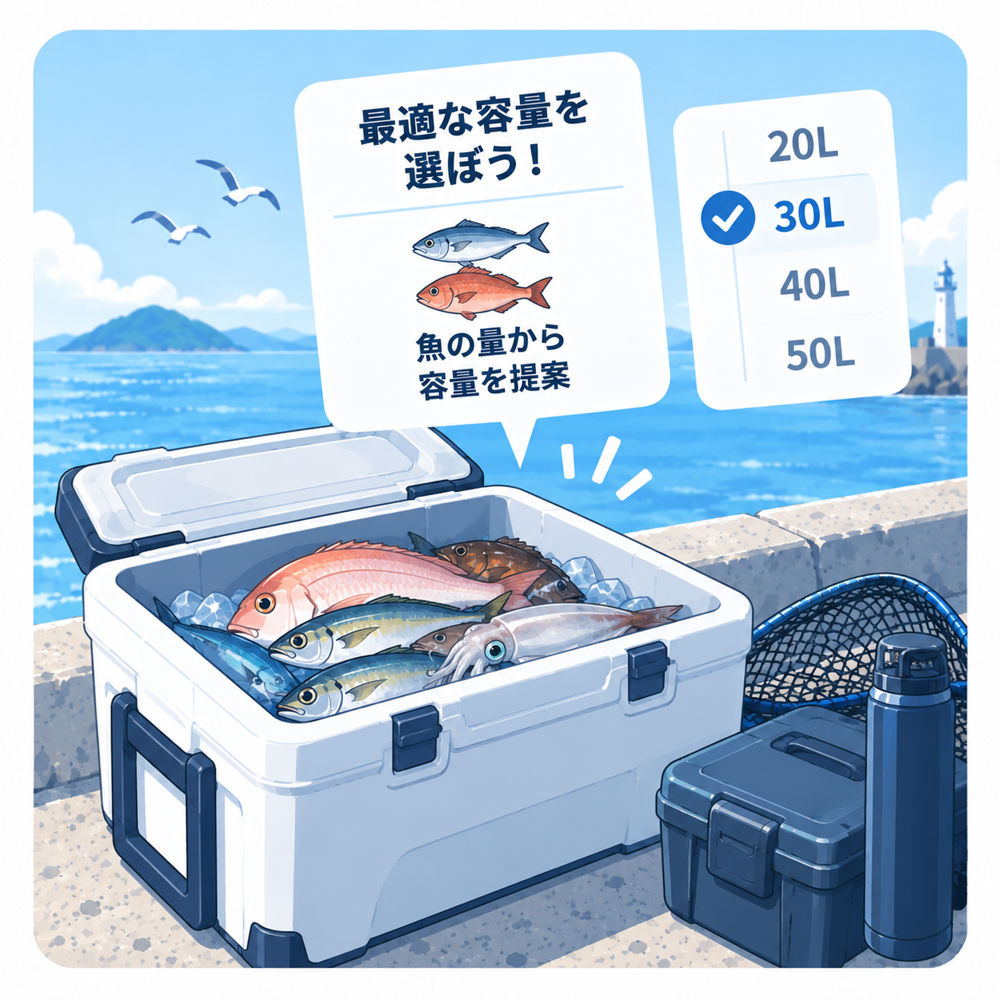

FISHING COOLER NAVIGATOR
クーラーボックス容量ナビ
魚種や持ち帰り方を選ぶと、容量帯と内寸で確認したいポイントを案内します。

クーラーの条件を選択
1 / 4
クーラーボックスは何Lを選べばいい？
魚の種類と長さ、持ち帰る量、氷や飲食物を入れる余裕から考えます。このナビはメーカーの実製品にある容量帯と内寸を基準にし、魚の体積を独自計算していません。
容量だけで選ばない方がいい理由
同じ25Lや30Lでも、横長・縦長など形状によって内寸が異なります。シーバスや青物は容量が足りても、内寸長が不足することがあります。
内寸とは？
クーラー内部の実際に物を入れられる寸法です。商品ページでは外寸と間違えず、内寸の長さ・幅・高さを確認してください。
魚と氷を入れるスペース
魚だけでいっぱいになるサイズは避け、氷や保冷剤を入れる余裕を残してください。必要量は気温、釣行時間、断熱方式で変わるため、このナビでは一律の割合を使用しません。
大きければよいとは限りません
容量が大きいほど、クーラー本体の重量、持ち運び、車や自宅での収納、価格にも影響します。実際に持ち運べる大きさとのバランスを確認してください。
釣り用クーラーの特徴
釣り用製品には、座れるボディ、水栓、魚投入口、滑り止め、キャスターなどを備えたものがあります。一般的なクーラーと比較するときは容量だけでなく、保冷構造と釣り場で必要な機能も確認してください。
よくある失敗
容量だけを見て大型魚用を選ぶ
大型魚では内寸長が重要です。魚を曲げずに収納したい場合は、魚長に近い内寸を持つロングタイプを比較してください。
魚だけで満杯になる容量を選ぶ
氷や保冷剤を入れる場所が必要です。飲食物も入れるなら、魚と分けられるトレーやケースの有無も確認してください。
迷ったら最大サイズを選ぶ
大型クーラーは重く、保管場所も必要です。普段の釣果と移動方法に合う容量帯から比較してください。